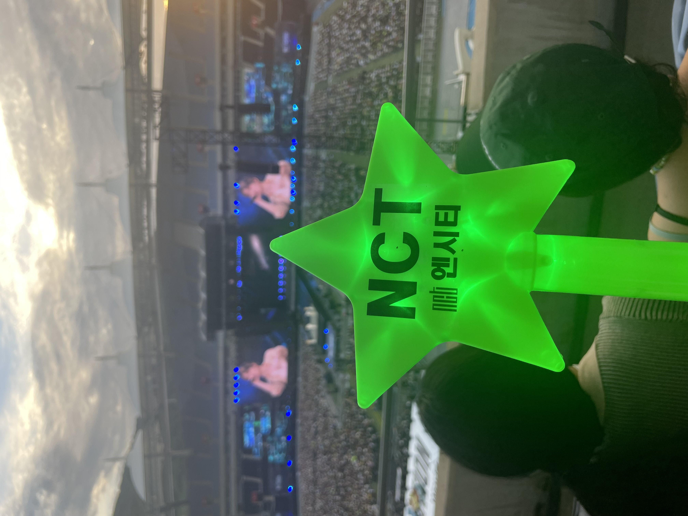
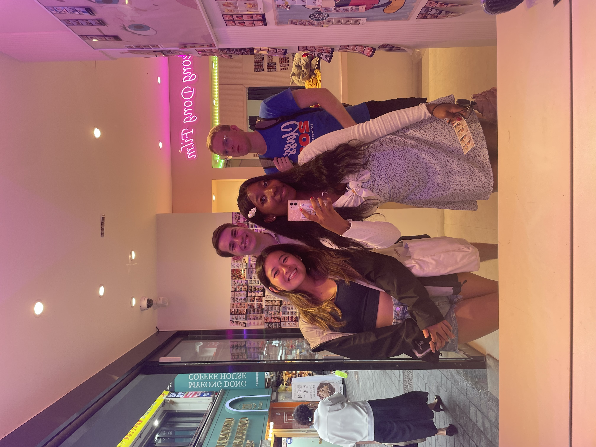
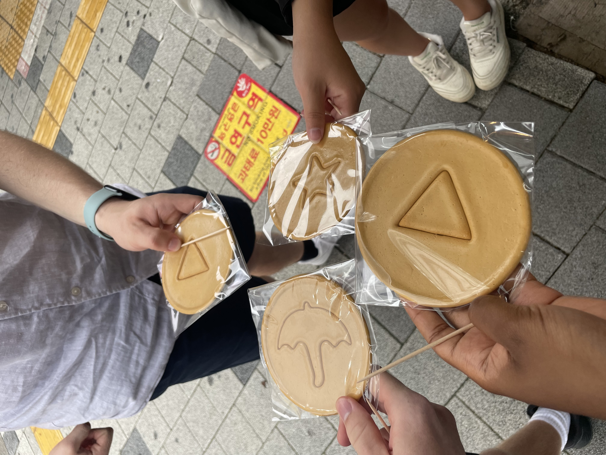
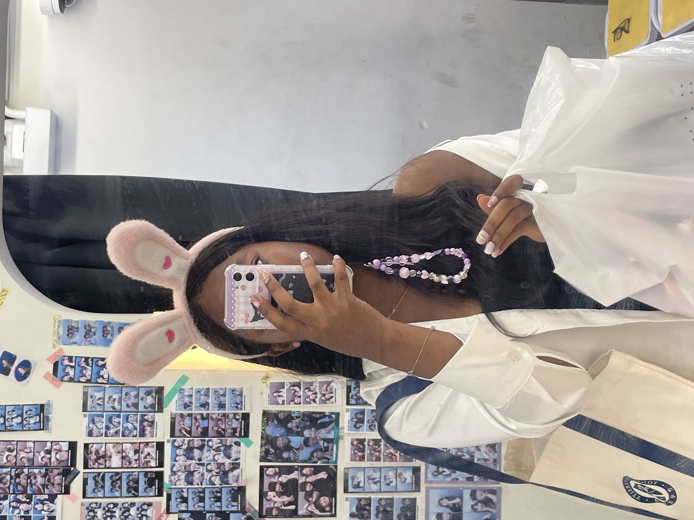
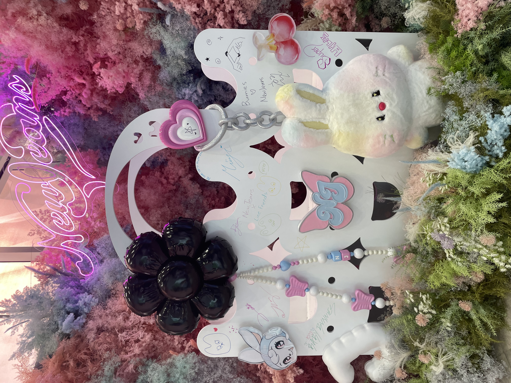

First Day at Yonsei
Walking onto Yonsei University’s campus for the first time felt unreal, almost like stepping into a scene from a movie. The chilly morning air, the wintery trees, and the blue “YONSEI” banners instantly made me feel like I had finally arrived somewhere special. Even though I’d seen photos before, hearing students laughing and little bits of Korean around me made everything feel brand new.
My first stop was Underwood Hall; the spot every study-abroad vlog shows. Standing in front of it felt emotional and exciting, and of course I took way too many photos. Then I followed the uphill path to my classroom (no one warned me Yonsei is basically cardio). Inside, students from all over the world were introducing themselves, and when the professor welcomed us to the Yonsei community, it suddenly felt real.
At lunch, a few of us walked down to Sinchon. We explored cafés and shops, but the highlight was grabbing hotteok from a street vendor. It was warm, sweet, and honestly the perfect “welcome to Korea” moment.
By the end of the day, my feet were sore and my backpack felt heavy, but I was so happy. My first day at Yonsei wasn’t perfect or calm—but it was the beginning of something I know I’ll never forget.


My First KPOP Concert in Korea!
I still can't believe I went to NCT Nation 2023—even thinking about it now feels like a dream. Walking toward the stadium with my lightstick in hand, I tried not to freak out. Everywhere I looked, fans were wearing green, taking selfies, and buzzing with excitement. "Oh my god… I'm really here," I kept thinking.
As soon as the lights went down, the entire stadium screamed, and I screamed too without realizing it. Seeing NCT walk on stage for the first time was unreal. I've seen them on screens countless times, but live with the lights, fireworks, and booming vocals—it was overwhelming. I think I forgot to breathe during the first few songs.
Every performance was incredible. The bass shook the floor, fan chants filled the air, and the members' smiles and jokes made it feel like we were all part of something bigger. At one point, I just stopped recording and watched—the sea of green lightsticks, the sound of thousands singing together; it was pure magic.
By the end, I was sweaty, exhausted, and running on adrenaline, but so happy. Walking out with everyone chanting "NCT! NCT!" made me grin like an idiot. My first K-pop concert was unforgettable, and NCT Nation 2023 will always be one of those nights I come back to in my memory.


Exploring Myeondong for the First Time
I explored Myeongdong for the first time today with Ethan, Chris, and Emily, and it was the perfect mix of chaos and fun. The moment we stepped out of the station, we were surrounded by bright signs, street food smells, and nonstop K-pop.
We started with the Squid Game dalgona challenge, which went exactly how you'd expect—Ethan broke his immediately, mine snapped a few minutes later, and somehow Chris was the only one who survived.
Next, we stopped by a cat café, where the cats acted like royalty and we were their humble guests. Emily fell in love instantly. Then we squeezed into a photo box and took the funniest, most chaotic photos ever—someone messed up in every frame, but that made them even better.
We wandered around, did some shopping, and then ended the evening with dinner at a cozy restaurant tucked in one of the side streets. We ordered way too much food, laughed the entire time, and left completely exhausted but happy.
My first trip to Myeongdong was busy, loud, and a little overwhelming—but honestly, unforgettable. I can't wait to go back.


Exploring New Jeans' Pop-Up Shop
Today I finally got to visit the NewJeans pop-up shop, and it was honestly everything I hoped for. The moment I walked in, it felt like stepping straight into their world—pastel colors, adorable bunny designs everywhere, and their music playing in the background. Even the walls were cute.
The merch was dangerous. There were photo cards, shirts, bags, stickers, keychains; basically everything that screams "just take my money." I picked up a few things I definitely didn't plan on buying, but the aesthetic was too good to resist.
One of the best parts was the photo zones. They had different themed areas, including spots inspired by "OMG" and "Super Shy," and everyone was taking turns posing. I got some really cute pictures, even though I had to wait a bit because everyone wanted their moment.
The whole place had this warm, excited energy; fans chatting, comparing merch, and pointing out tiny details hidden in the displays. It felt like a little NewJeans universe created just for us.
By the time I left, my bag was full, my phone storage was crying, and my heart was very happy. Visiting the NewJeans pop-up wasn't just shopping;it was an experience. And honestly? I'd go again in a heartbeat.
Seeing the Popular Starfield Library in Gangnam
Today I finally got to visit the famous Starfield Library in Gangnam, and it was just as magical as everyone says. The moment I walked into the mall and saw the towering bookshelves stretching all the way up to the ceiling, I literally stopped in my tracks. It didn't even feel like a library; it felt like a movie set.
People were everywhere: taking pictures, reading quietly, sipping coffee, or just standing there staring at the huge shelves like I was. The whole place had this calm-but-busy energy, like a peaceful corner hidden inside one of the trendiest parts of Seoul.
I walked around slowly, just taking everything in. The stairs, the giant displays, the warm lighting; it all made the space feel cozy despite how big it was. I even sat down for a bit just to people-watch and soak up the atmosphere.
Of course, I had to take a few photos… okay, a lot of photos. The library is so photogenic it's almost impossible to take a bad one.
Even though I didn't check out any books, visiting Starfield Library definitely felt like a must-see experience. It's one of those places that makes you appreciate how beautiful everyday spaces can be. I'd love to go back, maybe grab a coffee next time and stay a little longer.